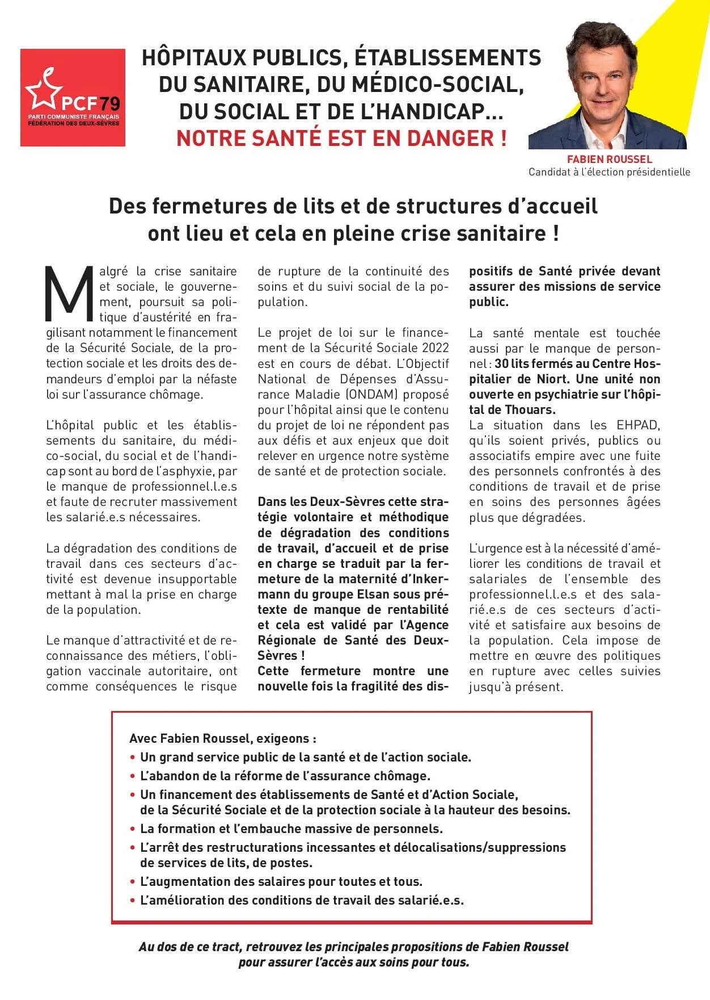

Publication
Hôpital et médico-social. Défendre les lits et les structures d’accueil
Date indiquée par Facebook · 24 décembre 2021
Repères éditoriaux
En décembre 2021, nous dénoncions les fermetures de lits et de structures d’accueil en pleine crise sanitaire. Les personnels et les usagers ont besoin de services capables de répondre à leurs besoins.
Texte conservé avec la publication
Notre santé est en danger. Des fermetures de lits et de structures d'accueil ont lieu en pleine crise sanitaire !
Alors que Fabien Roussel, candidat à l'élection présidentielle a fait connaître ses propositions pour assurer l'accès aux soins et le bon fonctionnement de l'hôpital public, les communistes étaient présents cette semaine devant le Centre Hospitalier Nord Deux-Sèvres et le Centre Hospitalier de Niort pour distribuer le tract sur leurs propositions pour l'accès aux soins pour tous.
« Nous devons toutes et tous avoir accès à la même qualité de soins, quels que soient notre classe sociale, notre âge, notre condition physique, notre handicap ».


Sources
Archive rouge · export Facebook · AR-0002-FB-01992
À lire aussi · À Parthenay, solidarité avec les grévistes de l’Ehpad de Pompairain